Handmade Objects
Danish Teak Side Chair with Black Leather in the Style of Kai Kristiansen
· 20th century
Price Upon Request

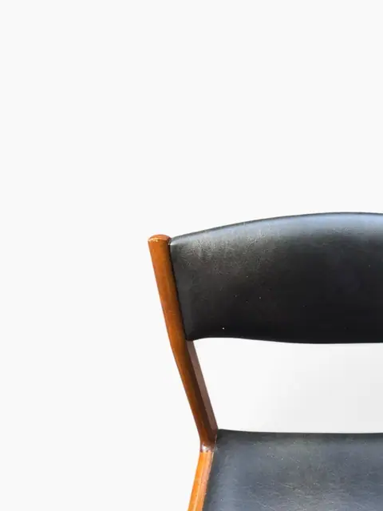
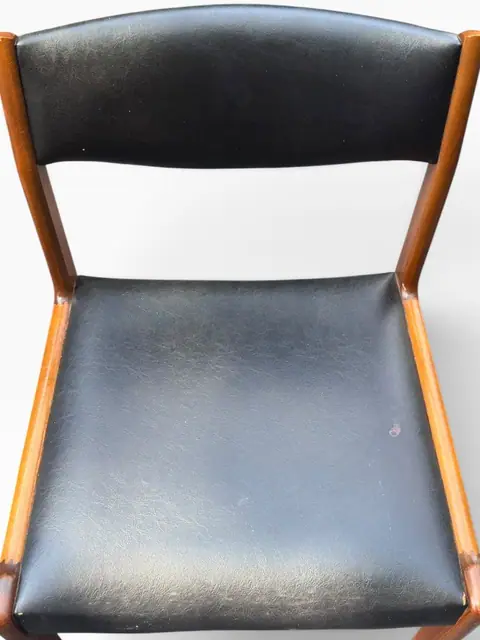
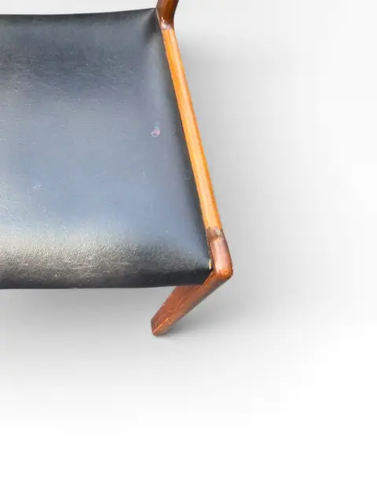
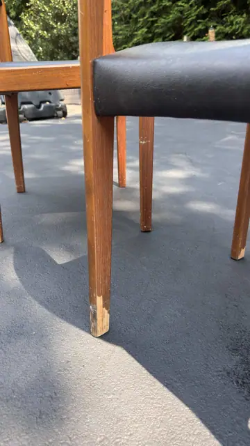
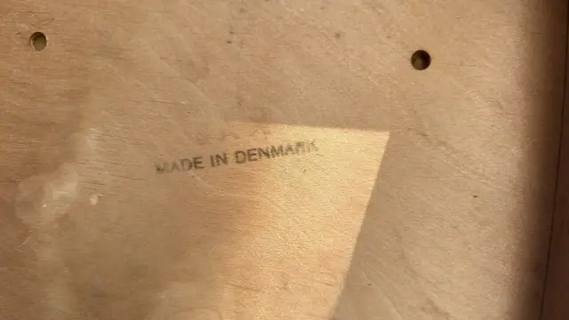
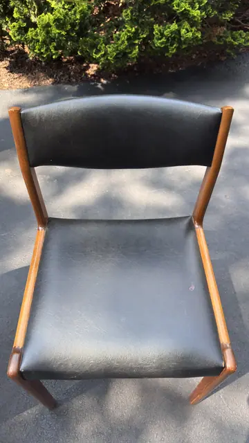
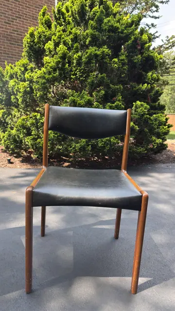
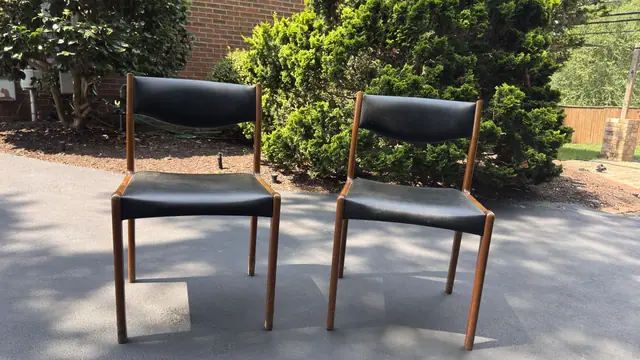
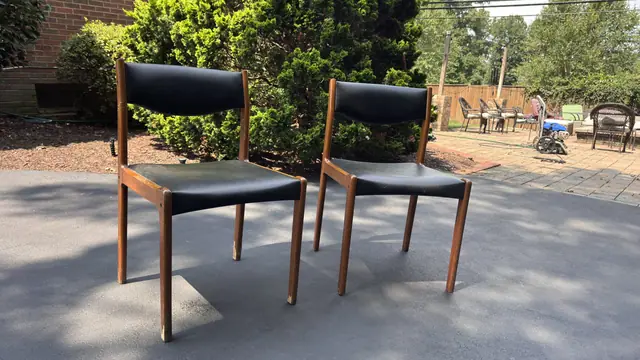
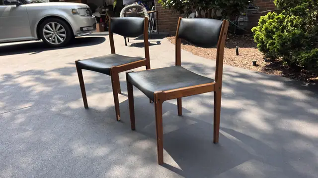
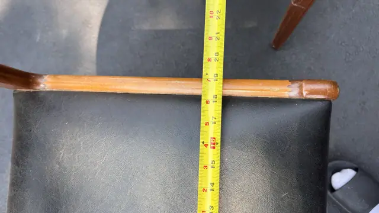
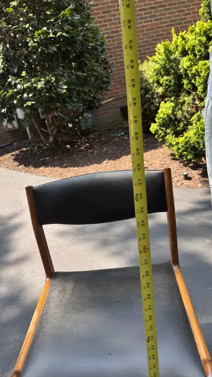
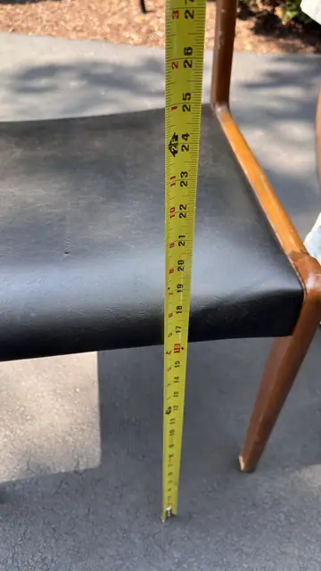
About the Item
A 1960s Danish side chair in solid teak with black leather seat and curved backrest, in the style of Kai Kristiansen's Model 31 for Schou Andersen. The back posts sweep in one continuous curve from the rear legs into the backrest — the sculptural gesture of classic Danish modern seating. Dimensions: 20 in W x 32 in H (51 x 81 cm), seat height 18 in (46 cm) — read from tape; depth not measured No label visible; attribution is stylistic only ('in the style of').
Details
- Creation Year:
- 20th century
- Medium:
- Teak and leather
- Period:
- 20Th
- Condition:
- Offered in the condition shown in the photographs.
- Reference Number:
- VO-355